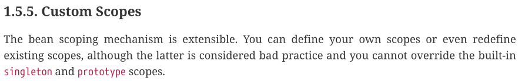

本文从原理上讲解Spring IoC容器的作用域机制，建议对着源码阅读。
0 引入问题
当我们谈到Spring作用域的时候，自然而然会想到如下作用域（来自spring-core官方文档）：
| 作用域 | 描述 |
|---|---|
| singleton | (Default) Scopes a single bean definition to a single object instance for each Spring IoC container. |
| prototype | Scopes a single bean definition to any number of object instances. |
| request | Scopes a single bean definition to the lifecycle of a single HTTP request. That is, each HTTP request has its own instance of a bean created off the back of a single bean definition. Only valid in the context of a web-aware Spring ApplicationContext. |
| session | Scopes a single bean definition to the lifecycle of an HTTP Session. Only valid in the context of a web-aware Spring ApplicationContext. |
| application | Scopes a single bean definition to the lifecycle of a ServletContext. Only valid in the context of a web-aware Spring ApplicationContext. |
| websocket | Scopes a single bean definition to the lifecycle of a WebSocket. Only valid in the context of a web-aware Spring ApplicationContext. |
从功能上看，这些作用域分别定义了调用org.springframework.beans.factory.BeanFactory#getBean()方法时，容器根据bean definition实例化bean object的规则。
从底层实现上看，这些作用域可以分成两类：
- 内置作用域：
singleton和prototype。 - 自定义作用域：
request、session、application、websocket以及我们自定义的作用域。
所有Spring IoC容器中都具备singleton和prototype作用域功能，而只有实现Web功能的容器（如org.springframework.web.context.support.GenericWebApplicationContext接口）中才具备request和session等作用域功能。这是因为它们底层的实现机制不同。
spring-core官方文档中说了这么一段话：

我个人这么理解作用域机制的扩展性：
- 内置的
singleton和prototype作用域——不可扩展。 - 可以复写
request和session等预定义作用域的规则——可扩展。 - 可以自定义作用域——可扩展。
以上简要概括了Spring IoC容器作用域的基本概念，希望能够引起大家思考以下几个问题（本文后续部分会一一探讨）：
- 什么是作用域？如何使用作用域？
- 作用域的底层原理？
- 内置作用域和自定义作用域的区别？
- 如何自定义作用域？
1 什么是作用域？如何使用作用域？
1.1 什么是作用域？
作用域是个很宽泛的概念，本文讨论的特指是Spring IoC容器中Bean对象的作用域，简单可以理解成：bean对象的存活范围。
为了便于深入理解，我们先要大概了解一下Spring IoC容器的工作原理。Spring IoC容器的使用流程大概可以分为以下3个步骤：
-
配置
Bean：1
2
3
4
5
6
7
8
9
public class AppConfiguration {
public A a() {
return new A();
}
}
class A {} -
创建Spring IoC容器，并读取配置信息：
1
ApplicationContext context = new AnnotationConfigApplicationContext(AppConfiguration.class);
-
从容器中获取
bean，并使用：1
2
3
4A a = context.getBean("a", A.class);
System.out.println(a); // com.xianhuii.spring.beanscopes.demo01.A@16267862
a = context.getBean("a", A.class);
System.out.println(a); // com.xianhuii.spring.beanscopes.demo01.A@16267862
Bean作用域本质上指的是多次调用context.getBean()方法获取到的是否是同一个bean对象。
上面例子中，默认指定作用域为singleton，所以两次调用context.getBean()方法获取到同一个对象。
如果指定作用域为prototype：
1 |
|
此时，两次调用context.getBean()方法获取到就是两个对象了：
1 | A a = context.getBean("a", A.class); |
1.2 如何使用作用域？
作用域的使用比较简单，只需要在配置Bean时使用指定作用域即可。我们使用作用域的重点其实在于不同作用域下context.getBean()的规则。
1.2.1 singleton
singleton作用域下，多次调用context.getBean()方法获取到同一个对象。
- 配置：
1 |
|
- 使用：
1 | ApplicationContext context = new AnnotationConfigApplicationContext(AppConfiguration.class); |
1.2.2 prototype
prototype作用域下，每次调用context.getBean()方法获取到新对象。
- 配置：
1 |
|
- 使用：
1 | ApplicationContext context = new AnnotationConfigApplicationContext(AppConfiguration.class); |
2 作用域的底层原理？
Bean作用域本质上指的是多次调用context.getBean()方法获取到的是否是同一个bean对象。
所以，作用域底层执行原理在context.getBean()方法中，其中与作用域有关的执行流程如下：
- 从
BeanFactory中获取已加载的BeanDefinition，判断该Bean的作用域。 - 如果是
singleton作用域，则执行单例创建规则。 - 如果是
prototype作用域，则执行原型创建规则。 - 如果是自定义作用域，则执行自定义创建规则。
相关核心源码如下（org.springframework.beans.factory.support.AbstractBeanFactory#doGetBean()）：
1 | // 获取BeanDefinition |
2.1 singleton作用域
singleton作用域bean对象的创建过程分为三个步骤：
- 判断是否为
singleton作用域。 - 根据
singleton规则创建bean对象。 - 对
bean对象进行后处理。
1、判断
mbd.isSingleton()方法（org.springframework.beans.factory.support.AbstractBeanDefinition#isSingleton）的源码如下：
1 | public boolean isSingleton() { |
其中两个静态变量分别为：
1 | String SCOPE_SINGLETON = ConfigurableBeanFactory.SCOPE_SINGLETON; // "singleton" |
所以，我们在声明Bean时，以下情况会声明为singleton作用域：
-
默认情况（即不显示指定作用域），会默认声明为
SCOPE_DEFAULT作用域，而SCOPE_DEFAULT实际上就是singleton作用域。1
2
3
4
public A a() {
return new A();
} -
显示指定为
singleton作用域，通过@Scope("singleton")等方式。1
2
3
4
5
public A a() {
return new A();
} -
显示指定为默认作用域，通过
@Scope等方式。1
2
3
4
5
public A a() {
return new A();
}
2、创建单例bean
创建单例bean的源码如下：
1 | sharedInstance = getSingleton(beanName, () -> { |
其核心在于org.springframework.beans.factory.support.DefaultSingletonBeanRegistry#getSingleton(java.lang.String, org.springframework.beans.factory.ObjectFactory<?>)方法，其中定义了大部分创建单例bean的规则（模板方法模式）：
- 为
singletonObjects对象（单例对象缓存）加锁：一次只能创建一个单例对象。 - 从
singletonObjects中获取当前beanName的对象。 - 如果存在，说明已经创建，直接返回。
- 如果不存在，说明还没有创建，则进行创建对象：
- 预处理。
- 创建对象。
- 后处理。
- 添加到singletonObjects缓存。
1 | public Object getSingleton(String beanName, ObjectFactory<?> singletonFactory) { |
其中，预处理和后处理都是单例对象创建过程中的回调，可以通过重写自定义回调规则。默认情况下，预处理和后处理会分别标记/清除单例对象“创建中”的标记。
addSingleton(beanName, singletonObject)方法会将该对象添加到singletonObjects单例对象缓存和registeredSingletons已注册单例对象缓存中，并将该对象从singletonFactories单例工厂缓存和earlySingletonObjects早期单例对象缓存中移除：
1 | protected void addSingleton(String beanName, Object singletonObject) { |
最重要的singletonFactory.getObject()方法是外部传入的，即调用该方法实际上会执行外部传入的匿名对象中定义的方法：
- 调用
createBean(beanName, mbd, args)会使用反射机制创建bean对象。 - 如果创建失败，则调用
destroySingleton(beanName)方法删除相关缓存信息。
1 | try { |
3、后处理
org.springframework.beans.factory.support.AbstractBeanFactory#getObjectForBeanInstance方法会对上述根据BeanDefinition创建处理bean进行后处理，该方法其实就是Spring AOP功能的入口。其内部会进行如下判断：
- 容器内部使用。
- 是否为普通
bean：直接返回。 - 是否为
org.springframework.beans.factory.FactoryBean实现类：Spring AOP核心类。
1 | protected Object getObjectForBeanInstance( |
2.2 prototype作用域
prototype作用域bean对象的创建过程分为三个步骤：
- 判断是否为
prototype作用域。 - 根据
prototype规则创建bean对象。 - 对
prototype对象进行后处理。
1、判断
mbd.isPrototype()方法（org.springframework.beans.factory.support.AbstractBeanDefinition#isPrototype）的源码如下：
1 | public boolean isPrototype() { |
其中静态变量为：
1 | String SCOPE_PROTOTYPE = ConfigurableBeanFactory.SCOPE_PROTOTYPE; // "prototype" |
所以，我们在声明Bean时，可以通过@Scope("prototype")等方式显示指定为prototype作用域：
1 |
|
2、创建原型bean
有了以上经验，我们就能很容易理解创建原型bean的源码：
1 | Object prototypeInstance = null; |
3、后处理
该后处理过程与singleton作用域完全相同。
2.3 自定义作用域
如果BeanDefinition既不是singleton，也不是prototype，那么就会执行自定义作用域的创建规则：
- 获取
BeanDefinition的scope属性值。 - 从
BeanFactory的作用域缓存scopes中获取对应的作用域。 - 调用
scope.get()方法，执行自定义创建规则。 - 后处理：Spring AOP功能入口，与
singleton和prototype相同。
1 | // 1、获取BeanDefinition的scope属性值 |
从以上源码中我们可以得出自定义作用域的三个步骤：
-
创建作用域实现类：实现
org.springframework.beans.factory.config.Scope接口，实现其get()方法。 -
将作用域实现类注册到
BeanFactory的scopes缓存中：key为作用域名，value为自定义作用域对象（org.springframework.beans.factory.config.ConfigurableBeanFactory#registerScope）。 -
配置
Bean时，指定对应的作用域名。
3 内置作用域和自定义作用域的区别？
通过上述的讲解，想必大家对内置作用域（singleton和prototype）和自定义作用域的区别有了本质上的理解。
内置作用域的作用域名和bean创建规则已经写死到Spring IoC容器中。
自定义作用域通过自定义的作用域名从BeanFactory的scopes缓存中找到自定义作用域实现类，根据其中实现的get()方法创建bean。同时，自定义作用域的bean对象存放于自定义的缓存中。
4 自定义作用域案例：request
接下来，我们以request作用域为例，展示如何自定义作用域。
4.1 RequestScope实现类
该实现类全限定类名为org.springframework.web.context.request.RequestScope。
其中，最核心的的部分在于org.springframework.web.context.request.AbstractRequestAttributesScope#get：
- 获取当前请求的
RequestAttributes对象。 - 从缓存中获取
bean。 - 如果缓存中不存在，则需要重新创建：
- 使用
objectFactory匿名对象创建bean。 - 将
bean放到缓存中。 - 重新从缓存中获取。
- 使用
- 如果缓存中存在，直接返回。
1 |
|
4.2 注册作用域
在实现Web功能的容器（如org.springframework.web.context.support.GenericWebApplicationContext接口）中，会自动将request等自定义作用域注册到BeanFactory的scopes缓存中：
1 | protected void postProcessBeanFactory(ConfigurableListableBeanFactory beanFactory) { |
在这里会调用封装好的WebApplicationContextUtils.registerWebApplicationScopes(beanFactory, this.servletContext);方法进行注册：
1 | public static void registerWebApplicationScopes(ConfigurableListableBeanFactory beanFactory, |
4.3 配置Bean
在定义Bean时，通过指定作用域为request即可：
1 |
|
为了方便，Spring还实现了@RequestScope注解，使用方式如下：
1 |
|
@RequestScope本质上和@Scope("request")没有任何区别（不过我们在自定义作用域时可以采用类似的方式来炫技）：
1 |
|
5 自定义作用域实战
在文章的最后，我们通过实战来自定义作用域myScope，用来简单模拟singleton作用域：
- 第一次调用
context.getBean()方法时创建新bean。 - 之后每次调用
context.getBean()方法都会获取同一个bean。
5.1 MyScope实现类
该实现类核心在于get()方法，其他方法都使用默认实现，因此省略：
1 | public class MyScope implements Scope { |
5.2 注册作用域
注册作用域的方法定义为org.springframework.beans.factory.config.ConfigurableBeanFactory#registerScope：
1 |
|
5.3 配置Bean
1 |
|
5.4 测试
1 |
|
输出结果为：
1 | com.xianhuii.springboot.demo.A@757194dc |